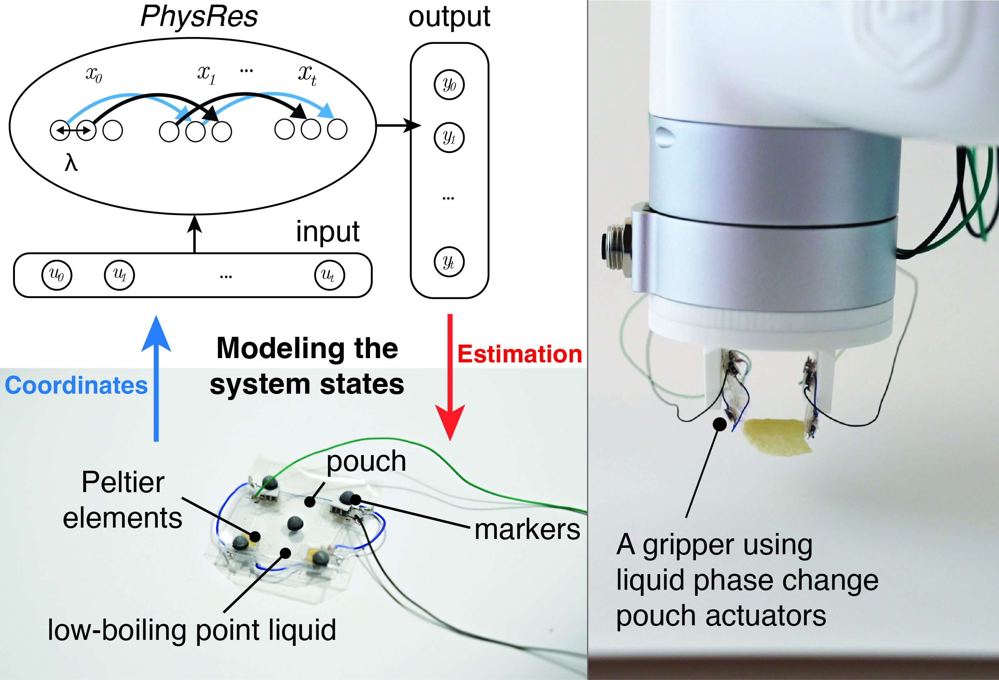
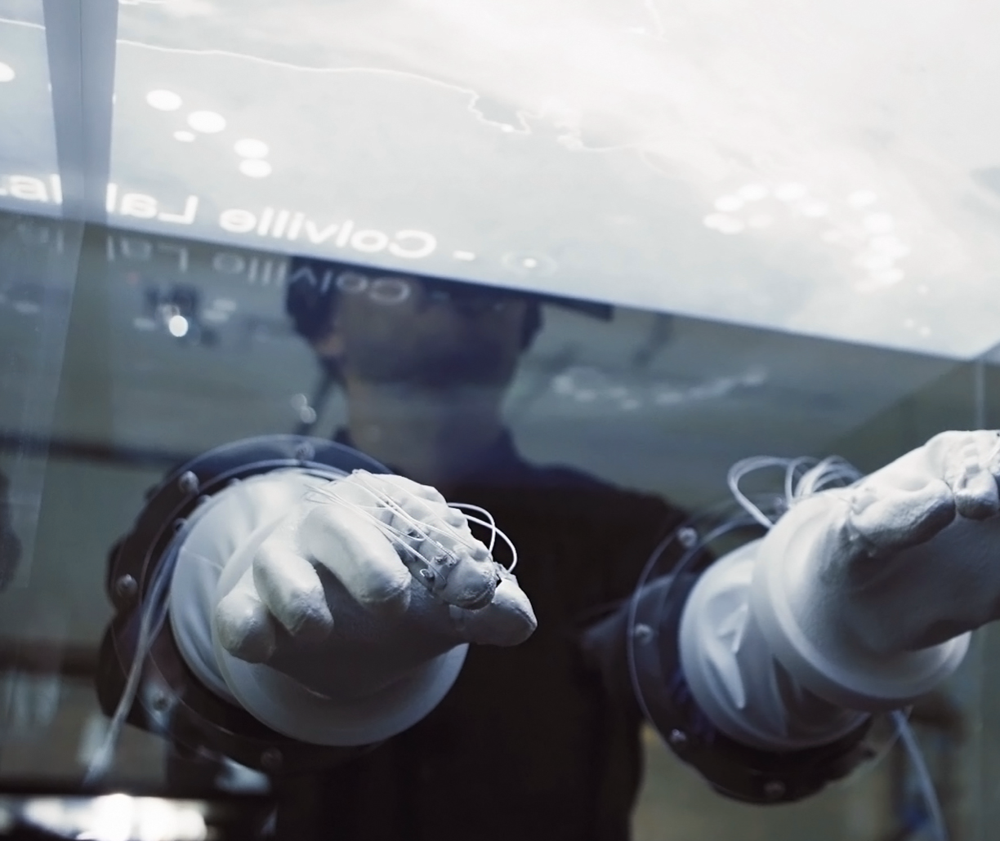
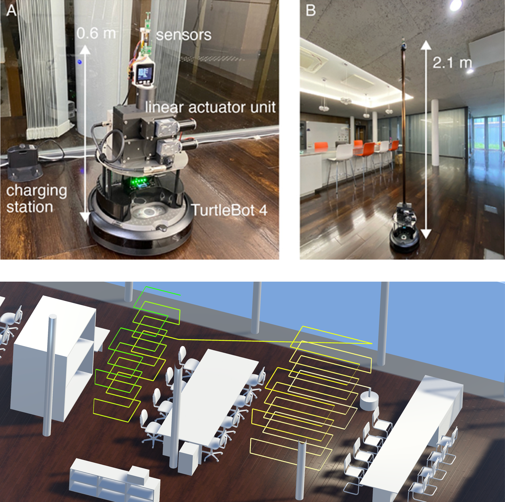

Neuromorphic Networks
Generalizing physical mechanisms for computation and actuator control.

Hysteretic reservoir dynamics
Journals & Conferences
C. Caremel, Y. Kawahara, and K. Nakajima. "Hysteretic reservoir."
Physical Review Applied (APS), 22, 064045, 2024.
PhysRes is an open-source, extensible framework designed to tackle the prediction of complex time-series data and control the behavior of soft actuators using the paradigms of physical reservoir computing.
C. Caremel, K. Nguyen, A. Nguyen, M. Huber, Y. Kawahara, and T. D. Ta. "Modeling The States of Liquid Phase Change Pouch Actuators by Reservoir Computing." IEEE/RSJ International Conference on Intelligent Robots and Systems (IROS), Hangzhou, China, Oct. 2025.
C. Caremel. "Generalizing hysteretic circuits to chaotic circuits as physical reservoir computers." Differential Equations for Data Science (DEDS 2025), Kyoto, Japan, Feb. 2025.
C. Caremel, Y. Kawahara, and K. Nakajima. "A novel framework for physical reservoir computing." Dynamics of multicellular systems and applications in machine learning (MCML 2024), Kanazawa, Japan, Oct. 2024.
Work-in-Progress
Liquid Reservoir Computing: Ongoing research with Prof. Hirofumi Notsu and Dr. Thomas de Jong on modeling the hydrodynamics of vortices for computation.
Physical Reservoir Computing For Soft Actuators: On-going research with Liu Fante (Master Course student, Kawahara lab) on leveraging and extending the PhysRes framework with the aim of controlling soft actuators behavior.
Soft Robotics, Sensors & Actuators
Developing frameworks, models and advanced control systems for enhanced robotic interaction and signal processing tasks.

Soft robotics and smart materials
Journals & Conferences

Echo state network for soft actuator control
C. Caremel, M. Ishige, T. D. Ta, and Y. Kawahara. "Echo State Network for Soft Actuator Control." Journal of Robotics and Mechatronics, Special Issue on Science of Soft Robots, Vol. 34, No. 2, Tokyo, Japan, Apr. 2022.
Z. Chen, C. Caremel, and Y. Kawahara. "A Simulation Study on Temperature Control of a SMA-based Ring-actuated Glove for Thermal Comfort." IPSJ Technical Report, 2022-UBI-76, No. 35, pp. 1-6, Nov. 2022.

Shape memory alloy wire actuators
G. Chernyshov, B. Tag, C. Caremel, F. Cao, G. Liu, and K. Kunze. "Shape memory alloy wire actuators for soft, wearable haptic devices." ACM International Joint Conference on Pervasive and Ubiquitous Computing (UbiComp 2018), pp. 112-119, Singapore, Oct. 2018.
HCI, Generative Models & Machine Learning
Exploring next-generation interactive XR systems, machine learning models applied to electromagnetics for wireless power, and autonomous machine perception.

Innovative displays and generative design
Journals & Conferences
S. Feng, C. Caremel, and Y. Kawahara. "Sketch2Topo: Diffusion-Model-Based Topology Optimization Using Hand-Drawn Inputs as Condition Constraints." In Proceedings of the Extended Abstracts of the 2026 CHI Conference on Human Factors in Computing Systems (CHI EA '26), Article 599, pp. 1–5, New York, NY, USA, Apr. 2026.
Y. Li, R. Takahashi, W. Yukita, K. Matsutani, C. Caremel, Y. Iwamoto, S. Lee, T. Yokota, T. Someya, and Y. Kawahara. "Plug-n-play e-knit: prototyping large-area e-textiles using machine-knitted magnetically-repositionable sensor networks." Proceedings of the Nineteenth International Conference on Tangible, Embedded, and Embodied Interaction (TEI '25), Article 56, pp. 1–7, Bordeaux, France, Mar. 2025.

Thermo-haptic feedback interface
G. Chernyshov, K. Ragozin, C. Caremel, and K. Kunze. "Hand motion prediction for just-in-time thermo-haptic feedback." ACM Symposium on Virtual Reality Software and Technology (VRST 2018), 52:1-52:2, Tokyo, Japan, Nov. 2018.
C. Caremel, G. Liu, G. Chernyshov, and K. Kunze. "Muscle-Wire Glove: Pressure-Based Haptic Interface." Intelligent User Interfaces (IUI) Companion 2018, 52:1-52:2, Tokyo, Japan, Mar. 2018.
Applied Electromagnetics
Y. Honjo, C. Caremel, K. Takaki, Y. Noma, Y. Kawahara, and T. Sasatani. "Magnetic field estimation using Gaussian process regression for interactive wireless power system design." arXiv preprint.
Y. Honjo, C. Caremel, Y. Kawahara, and T. Sasatani. "Suppressing Leakage Magnetic Field in Wireless Power Transfer using Halbach Array-Based Resonators." IEEE Antennas and Wireless Propagation Letters, Vol. 23, Issue 1, pp. 94-98, Jan. 2024.
Y. Honjo, C. Caremel, Y. Noma, K. Takaki, Y. Kawahara, and T. Sasatani. "Magnetic Field Prediction for Wireless Power Transfer Systems Using Gaussian Process Regression." IEICE Tech. Rep., Sapporo, Japan, Nov. 2024.
Y. Honjo, T. Sasatani, C. Caremel, and Y. Kawahara. "A Halbach-Array-Based Resonator for Suppressing Leakage Magnetic Field in Wireless Power Transfer Systems." Asian Wireless Power Transfer Workshop (AWPT 2022), MO-3-O4, Kyoto, Japan, Dec. 2022.
Work-in-Progress
Monocular Depth Estimation And Generative Models For 3D Reconstruction: Collaborative project with Xinyu Li (Master Course) and Shuyue Feng (Doctoral Program) focusing on novel techniques for image generation and 3D modeling.
Autonomous Systems & Machine Perception

Autonomous systems for data acquisition
C. Han, C. Caremel, K. Taniguchi, H. Murakami, K. Koike, K. Higashioka, Y. Toshima, Y. Akashi, and Y. Kawahara. "Acquisition and Visualization of HVAC Data by Autonomous Mobile Robots." Proceedings of the 30th CAADRIA Conference, Vol. 3, pp. 29-38, Tokyo, Japan, Mar. 2025.
C. Caremel, W. Guo, K. Senda, D. Takada, K. Tsubouchi, and Y. Kawahara. "Neural Network-Assisted Semantic Segmentation Of Vegetation Via Close-Range Remote Sensing." Japan Geoscience Union Meeting (JpGU), Tokyo, Japan, May 2022.